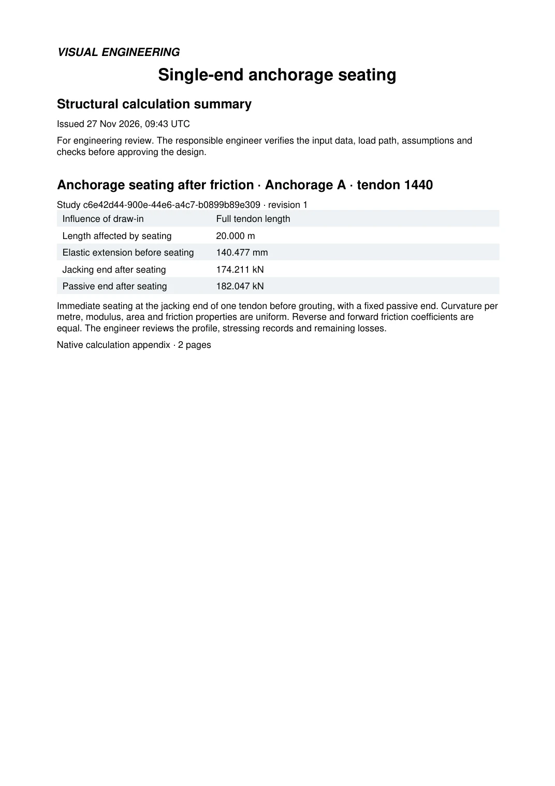

Anchorage seating after friction
A 20 m tendon carries 196 kN at the jack. With 4 mm draw-in, seating affects the first 16.199 m. At 10 mm the whole tendon is affected. The issued study below records 174.211 kN at the active end and 182.047 kN at the fixed passive end after the 10 mm draw-in.
This example uses uniform curvature per metre and equal forward and reverse friction. Review the tendon profile, stressing records and remaining losses for a project.
Loading the report…
